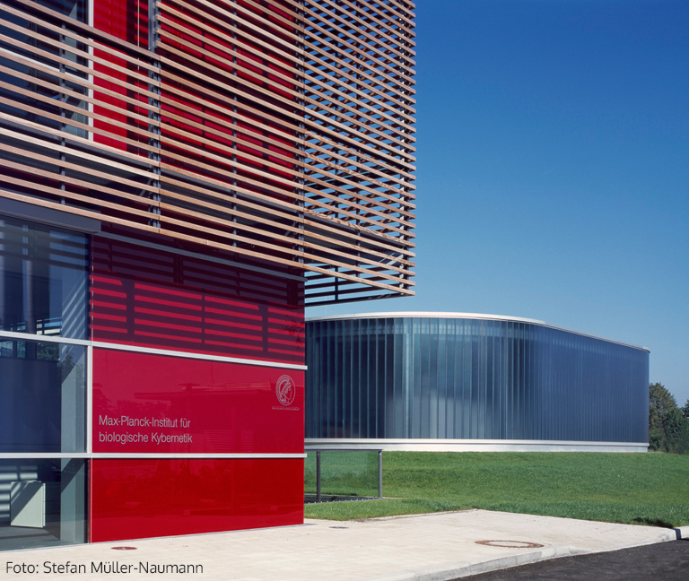
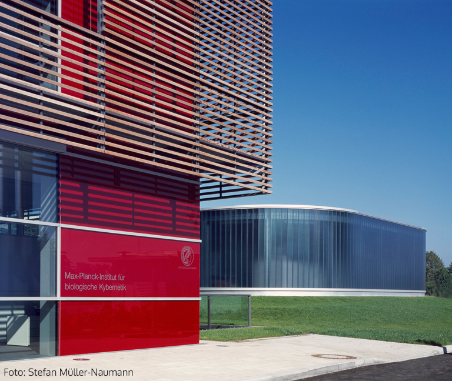

Welcome to our online study on decision making
This study is part of a research project conducted by the Computational Principles of Intelligence Group at the Max Planck Institute for Biological Cybernetics in Tuebingen, Germany. 

Your job will be to play an easy and fun game that we call Bandit City!
To be eligible to participate, you MUST meet the following criteria:
- 18 years of age or older.
- Fluent speaker of English.
- Have not previously participated in this experiment.
Please use a device with a keyboard. Please do not accept this HIT if you are using a touch screen! It will not work!
Details
How much time will it take and how much can you earn?
The study will take 20-30 minutes.You will be paid $2.00 USD for participation plus a bonus of up to $6.00 USD depending on your performance.
Hence, the expected payment is something around $6.00 to $7.00.
Confidentiality
Your participation in this study will remain confidential. Your MTurk worker ID will NOT be shared with anyone outside the research team.Participation and withdrawal
Your participation in this study is completely voluntary and you may refuse to participateor you may choose to withdraw at any time.
However, you will only be paid for the participation upon completion
and if you enter the correct completion code to Mturk (provided at the end of the study).
How to contact the researchers
If you have questions or concerns about your participation or payment or want to request a summary of research findings, please email the researcher or the principal investigator (Dr. Eric Schulz).Data protection
Your data will be anonymized and only used in the manner described in our data protection sheet, available here (please do not fill out this sheet!). The following text box summarizes the main points. Please read it carefully and provide consent below:By selecting the consent option below, you acknowledge that you fulfill all of the participation criteria and you agree to your data being used as described.